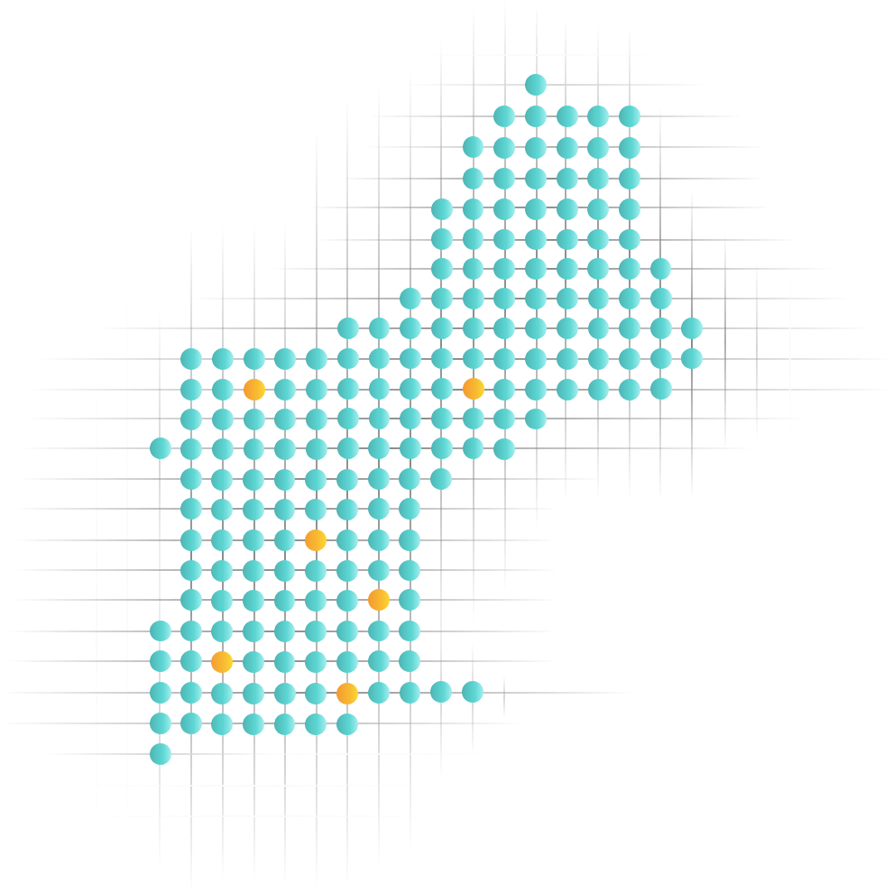

NEW.Mech is a one-day workshop that aims to bring together the
New England
Mechanics community to share the latest
advancements in the field. As in
past years,
this workshop is completely free of charge.
Date: Friday, Oct 30th, 2026
Time: 1pm–6pm
Location: MIT Grier room
34-401, 50 Vassar St, Cambridge, MA 02139
Register here by Friday, Oct 16th, 2026
The workshop will consist of three keynote talks from new faculty and two sessions of lightning talks (2-3 minute oral presentations). If you wish to submit a lightning talk, please provide a title during registration. We will send instructions for slide upload to those who choose to participate shortly after the registration deadline.
Tentative Schedule:
1:00pm-2:00pm Reception & Registration [Location TBD]
2:00pm-2:10pm Opening Remarks
2:10pm-2:40pm
Connor McCann, WPI
2:40pm-3:30pm Lightning Talks — Session A
3:30pm-3:45pm Break
3:45pm-4:15pm
Shabnam Raayai, Boston University, "Dynamics of bio-inspired V flight formations"
4:15pm-4:45pm
Andrew Akerson, MIT
4:45pm-5:45pm Lightning Talks — Session B
5:45pm Social & Closing Remarks
Questions? Contact
Mrityunjay Kothari or
Abigail Plummer
Link to flyer